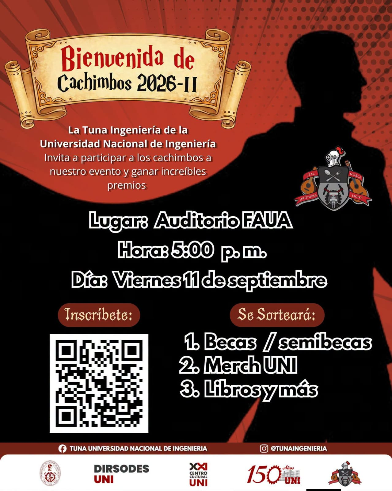
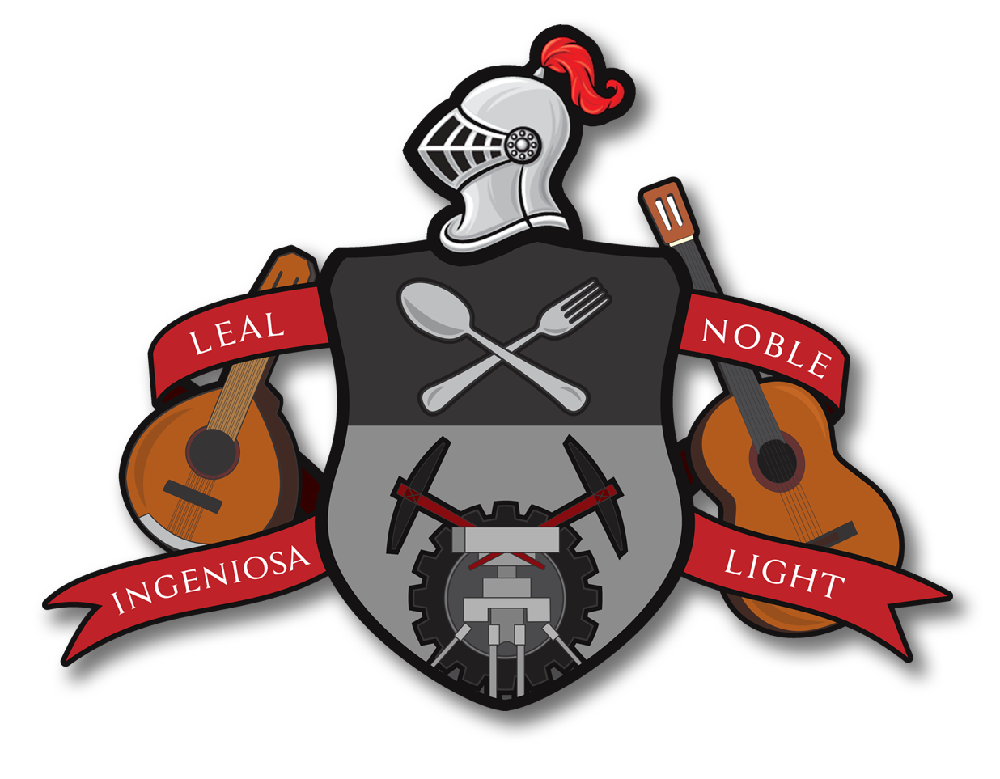

Bienvenida de Cachimbos 26-2
Actividad de bienvenida para recibir a los nuevos ingresantes de la promoción 26-2.
Toca para ver más
La Tuna de la Universidad Nacional de Ingeniería es una agrupación musical universitaria fundada el 19 de julio de 1997. Somos un conjunto de estudiantes apasionados por mantener viva la tradición de la música universitaria peruana.
Durante más de 25 años, hemos recorrido innumerables ciudades del Perú y el extranjero, compartiendo nuestras melodías y representando con orgullo los valores de nuestra universidad.
Cada nota que tocamos es un reflejo de nuestra dedicación, nuestro amor por la música y nuestro compromiso con la tradición.

Años de dedicación, esfuerzo y excelencia artística nos han llevado a obtener múltiples reconocimientos en festivales nacionales e internacionales de tunas universitarias.
Desarrolla tus habilidades musicales en un ambiente colaborativo y profesional.
Recorre el país y el mundo representando a la UNI en festivales internacionales.
Participa en competencias y gana reconocimientos por tu talento y dedicación.
Sé parte de una tradición viva de más de 27 años en la Universidad.
Tu lugar también está aquí
Si tienes pasión por la música y quieres formar parte de una tradición universitaria viva, te estamos esperando.